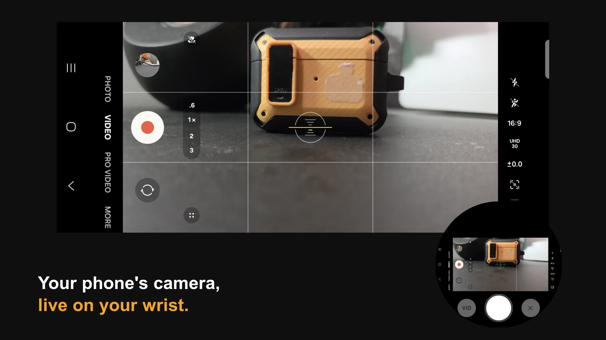
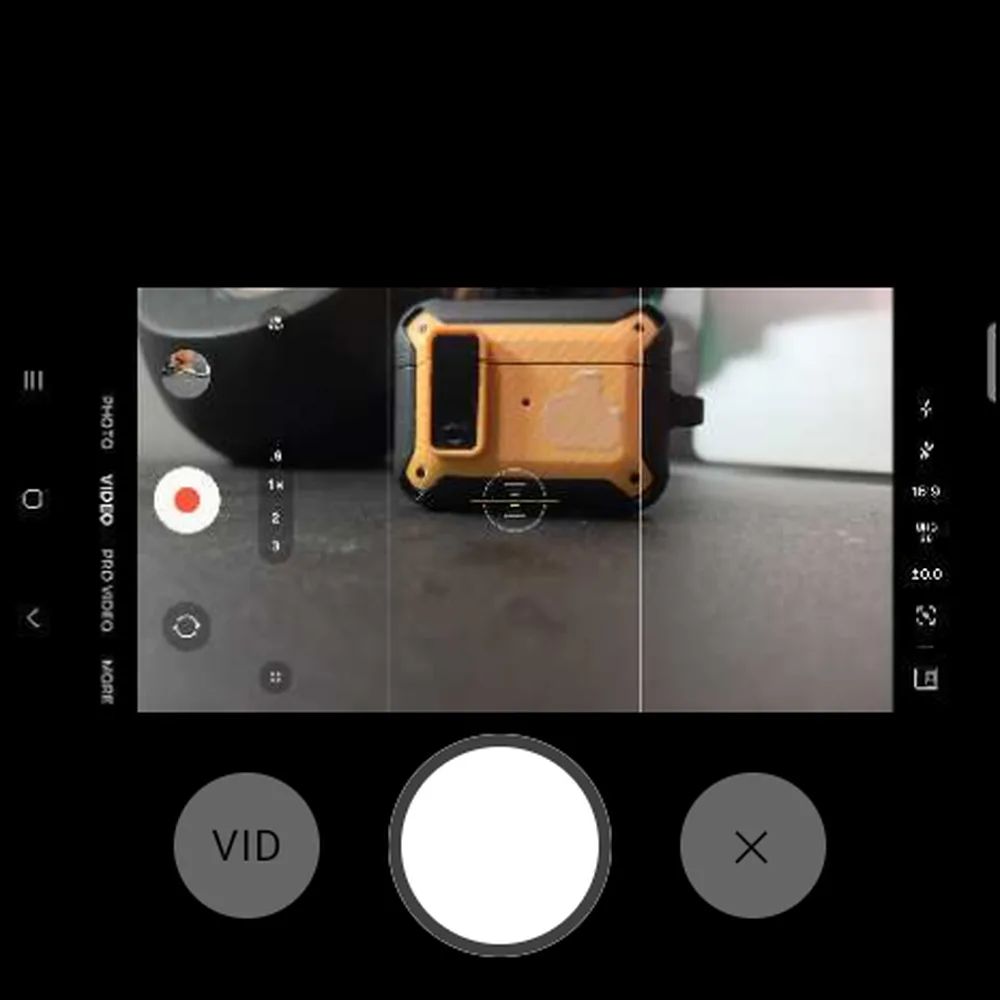
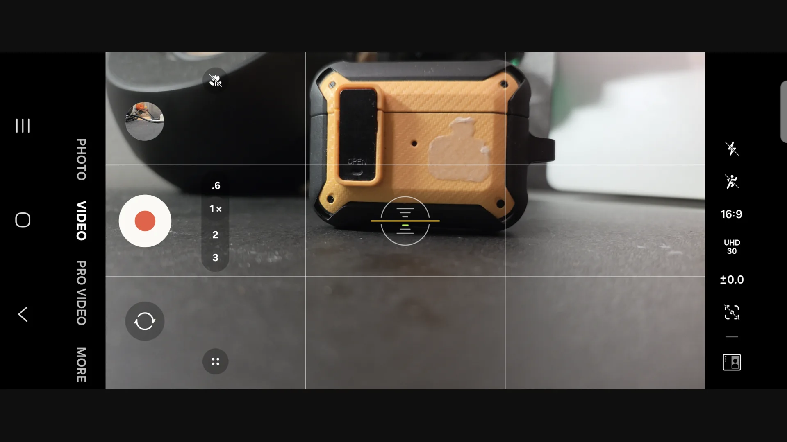

See your phone's camera from across the room.
Remote Viewfinder puts your phone's own camera app, live, on your Wear OS watch or on any browser on your Wi-Fi. Frame the shot, check yourself in it, and hit record without walking back to the phone.

Keep the camera you already shoot with.
Other remote apps replace your camera with their own, and you lose what you paid for in a flagship phone. Remote Viewfinder mirrors the real camera app instead.
Your camera app, untouched
Samsung Camera, Google Camera, Pro Video. Keep the phone's processing, stabilization, lens switching and modes, because it is the real app you're seeing.
Any Wear OS watch
Not only Galaxy or Pixel watches. The watch shows a live preview and its shutter works like a Bluetooth selfie-stick remote.
Any screen on your Wi-Fi
iPad, laptop or a spare phone. Open a link and the picture appears, sharp and low-latency. Tap the picture to tap the phone: record, focus, zoom.
Stays on your network
No account, no cloud, no analytics. The picture goes straight from your phone to your watch or screen and nowhere else.
On your wrist, or on a big screen.
Pick one per session.

A viewfinder on your wrist
- Start a Photo or Video session, or your last-used mode such as Pro Video, from the watch.
- A live preview over Bluetooth, enough to frame the shot.
- The big button is the shutter: it takes the photo or starts and stops recording, and it turns red while the phone records.
- Works away from Wi-Fi: the phone and watch talk directly.

A monitor anywhere in the room
- Scan the QR code on the phone or open its link. No app needed on the viewer.
- Hardware H.264 video, up to 1080p or the phone's native resolution.
- Tap the picture to tap the phone: hit record, tap to focus, switch lenses.
- Adapts to weak Wi-Fi by lowering the bitrate briefly instead of freezing.
The watch mirrors the camera. A tap on the wrist starts the recording.
Galaxy Z Fold running Samsung Camera (left), TicWatch Pro 5 (right). Real devices, not a mock-up.
Three taps to a remote viewfinder.
Start a session
From the watch (Photo, Video or Last-used mode) or from the phone app for a browser. The phone opens your camera app.
Approve the share
Android asks once per session to share the screen. Pick your camera app (or the entire screen). Android requires this tap every time, by design.
Frame and shoot
The picture appears within a few seconds. Tap the shutter on the watch, or tap the camera's own buttons in the browser.
Get Remote Viewfinder.
Free download from GitHub. The phone app is all you need for the browser viewer; add the watch app for the wrist viewfinder.
1 · Phone
- Download the APK on your phone and open it. Allow your browser to install apps when Android asks.
- Open Remote Viewfinder and allow notifications.
- For the watch shutter in Samsung Camera: Camera settings → Volume key function → Take picture or record video (usually already set).
- For tapping from the browser: tap Enable next to "Tap control" in the app and turn Remote Viewfinder on. If Android says the setting is restricted, open App info → ⋮ → Allow restricted settings and try again.
2 · Watch (optional)
- On the watch, enable Developer options (tap Build number seven times under Settings → System → About), then turn on ADB debugging and Wireless debugging.
- From a computer with
adbon the same Wi-Fi, pair and install:
Any Wear OS sideloading app works too.adb pair <watch-ip>:<pairing-port> adb connect <watch-ip>:<port> adb install remote-viewfinder-watch.apk - Open it on the watch and allow Bluetooth. The status line reads HID: connected when the shutter is linked to your phone.
Phone and watch apps must come from the same release. All versions and checksums are on the releases page.
Questions
Why does Android ask me to share my screen every time?
Remote Viewfinder works by mirroring your camera app, and Android requires you to approve screen sharing for every session. No app can skip or remember that prompt, which is a good thing: nothing can quietly watch your screen.
Can I use the watch and a browser at the same time?
Not yet. Each session feeds one viewer: start from the watch for the wrist viewfinder, or from the phone app for the browser.
Does it work with my phone and camera app?
It mirrors whatever camera app you choose, so the viewfinder works with any of them. The watch shutter sends a volume-up press, which Samsung, Google and most other camera apps treat as the shutter. It's developed and tested on a Samsung Galaxy Z Fold.
The watch shutter stopped responding during a session.
A known issue on some watches: the Bluetooth shutter link can drop when a session starts. Turning Bluetooth off and on on the watch restores it. A fix is in progress.
The browser viewer won't load.
The viewer is served by the phone itself, so both devices need to be on the same Wi-Fi network and a browser session must be running on the phone. Open the exact link the phone shows; it includes a private key.
What about privacy?
There's no account, no analytics, no ads and no server. Watch sessions travel over the Bluetooth or Wi-Fi link between your own paired devices. The browser viewer is a page hosted by your phone on your local network, protected by a private key in its link. That link also allows tapping on the phone, so treat it like a password. Your photos and videos are saved by your camera app as usual. Remote Viewfinder never reads or stores them.
Is it on Google Play?
Not yet. The GitHub version is the complete one, including tapping from the browser, and it installs as its own app, so it won't conflict with a Play Store version later.
Stop walking back to the camera.
Free, no account, and it works with the camera app you already use.